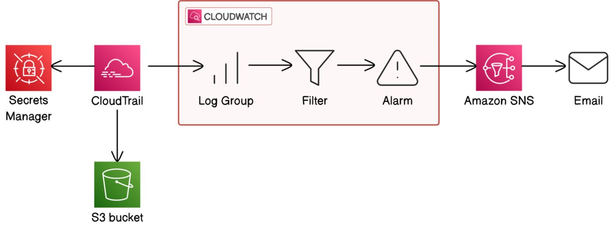
Step 1: Create a secret
A Secret in AWS Secret Manager. This secret will be something we want to monitor access to.
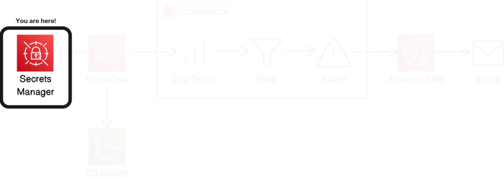
Create a New secret
- Log in to the AWS management console as your IAM Admin user
- In the AWS Management console search bar at the top, search for
SecretsManagerand select secret manager from the result
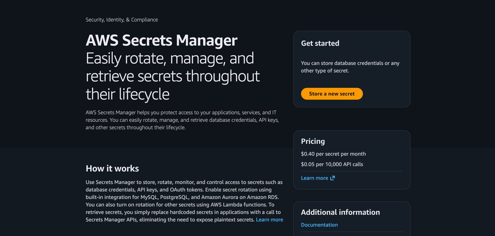
- Select store a new secret to begin creating your secret
- Under choose secret type, select other type of secret
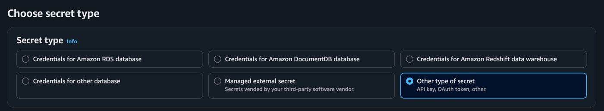
Enter your Secret
- In the key/value tab, enter
The Secret isas the key - Enter a random secret or hot take that you have as the value, for example
Ineed 3 coffees a day to functionorrice is the best carb
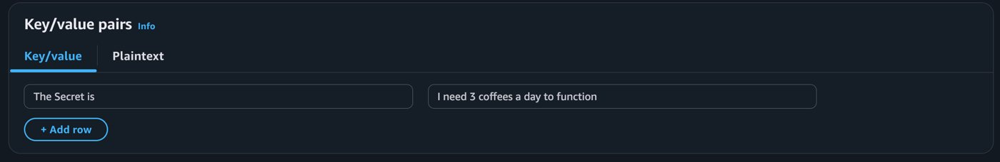
We'll keep the default encryption key setting
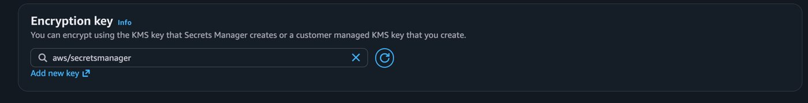
- Select next
- Welcome to the configure secret page
- Under secret name, enter
TopSecretInfo
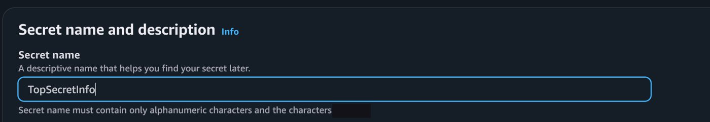
- Under Description - optional, add a description like
Secret created for Amazon's project on Building a Monitoring System
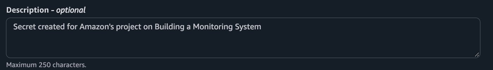
- Click next
- Click next again to skip the configuration rotation
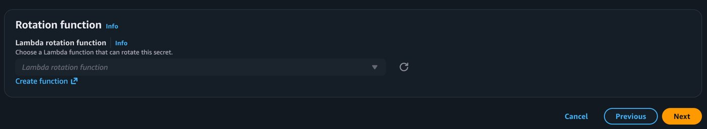
Let's review your secret set up:
- Secret type: Other type of secret
- Encryption key:
aws/secretsmanager - Secret name:
TopSecretInfo - Description: Secret created for Amazon's project on Building a Monitoring System
- Secret replication: Disabled
- Automatic rotation: Disabled
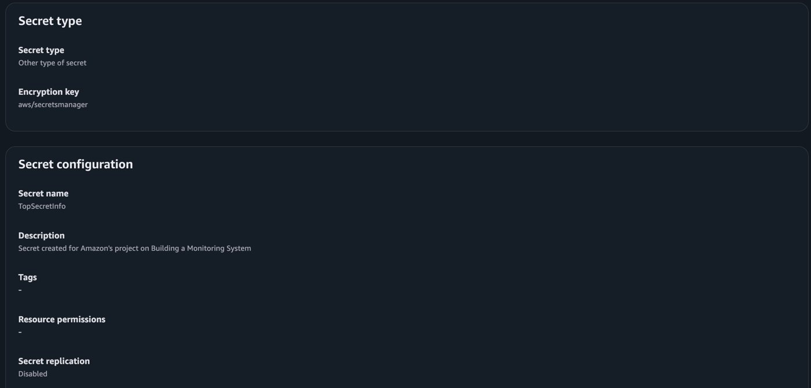
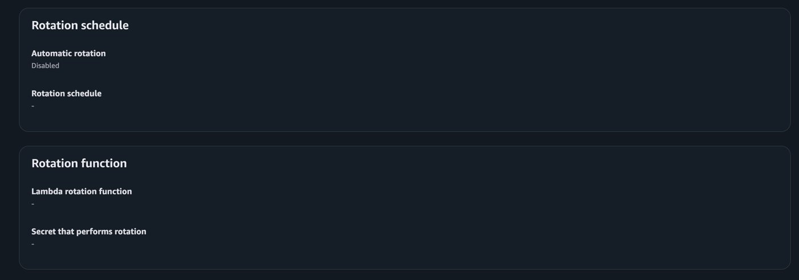
Click store at the bottom of the review page
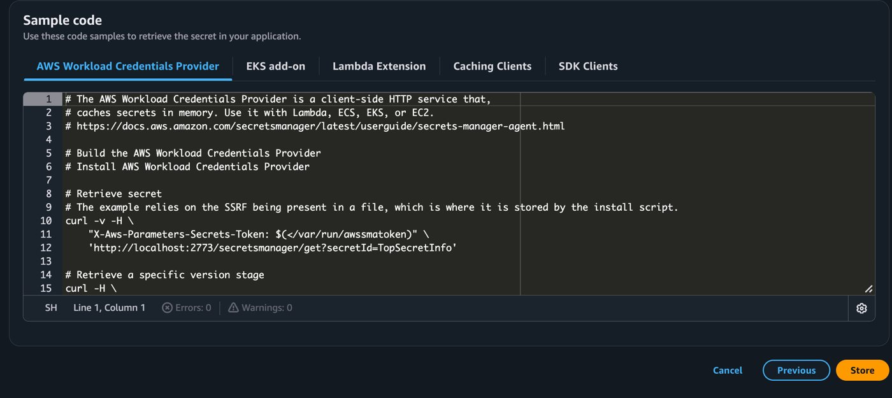
- You should see a green banner at the top
- In the green banner, select view details
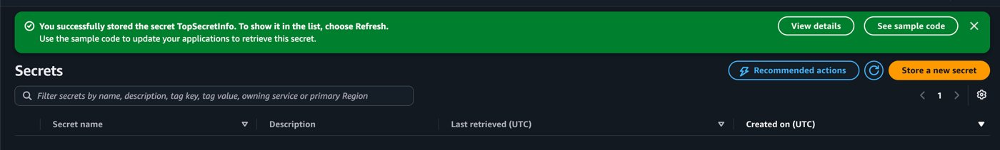
You can now see your newly created secret TopSecretInfo
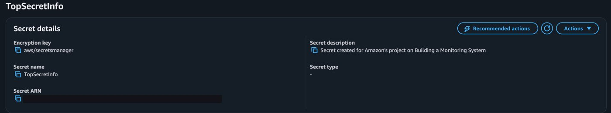
Step 2: Configure CloudTrail
CloudTrail is a monitoring service, it records events that happened in your AWS account, like creating resources, updating a name or setting and accessing secrets in secret manager.
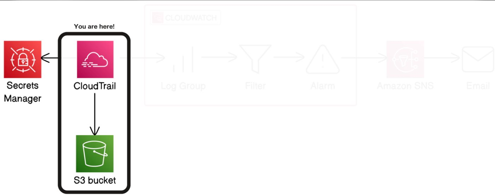
Create a New Trail
In the AWS management console, head to the CloudTrail console
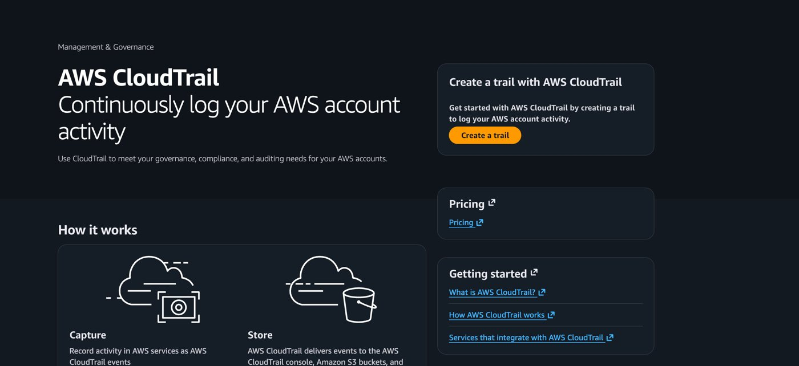
- From the left hand navigation panel, select Trails
- Select create trail to start setting up a new trail
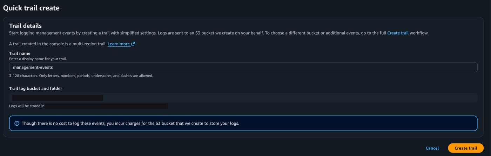
- Welcome to the choose trail attributes page! let's create a trail
- Under Trail name, enter
secrets-manager-trail
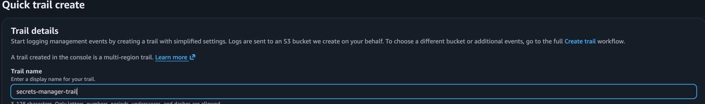
In the Storage location section, select Create new s3 bucket
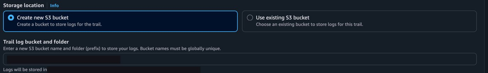
- Under Trail log bucket and folder, enter a unique bucket name:
amazon-secrets-manager-trail-yourinitials
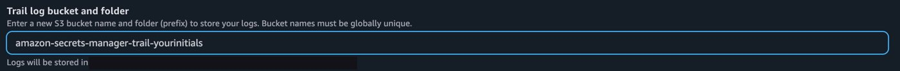
Keep the other default settings
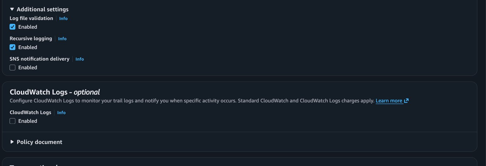
Scroll down and select next
Configure log events
On the choose log events page, ensure management events is selected under event type
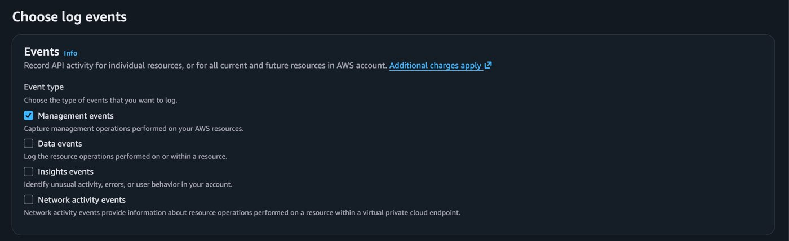
Under API activity, keep both read and write checked
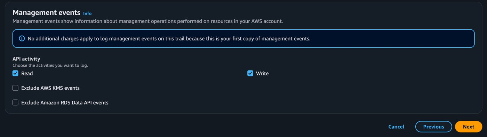
- Check Exclude AWS KMS events
- Check Exclude Amazon RDS Data API events
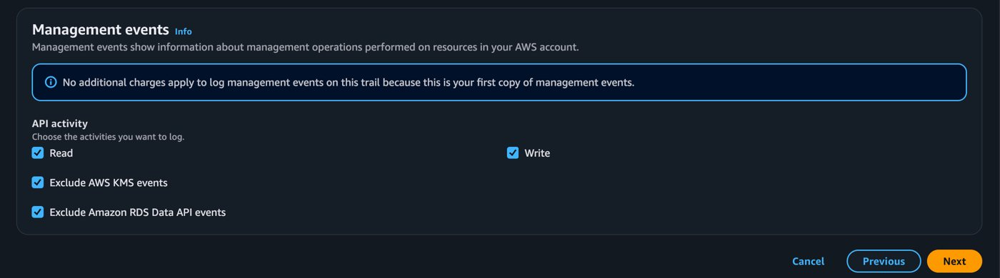
- Select Next
- Review your trail setup on the review and create page
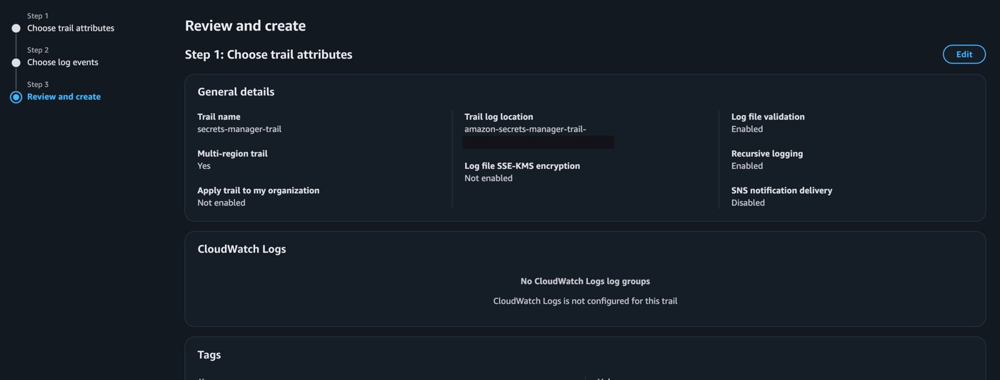
Review: choose trail attributes
- Trail name:
secrets-manager-trail - Multi-region trail: Yes
- Apply trail to my organization: Not enabled
- Trail log location:
amazon-secrets-manager-trail-yourinitials/AWSLogs - Log file SSE-KMS encryption: Not enabled
- Log file validation: Enabled
- SNS notification delivery: Disabled
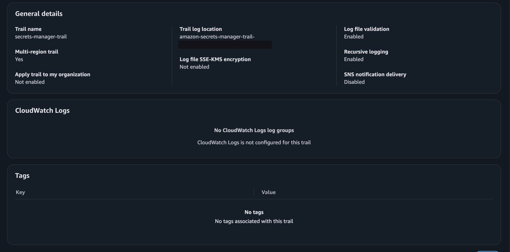
Review: choose log events
- API activity: All
- Exclude AWS KMS events: Yes
- Exclude Amazon RDS Data API events: Yes
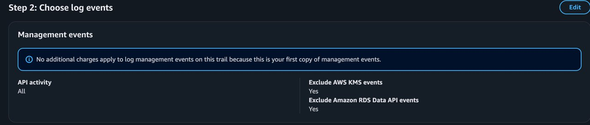
Click Create trail
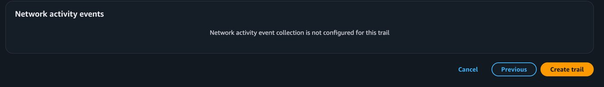
Step 3: Generate Secret Access Events
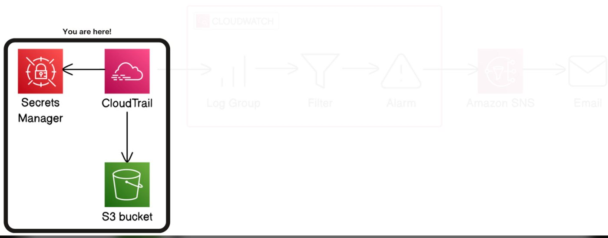
Access your secret
- Navigate back to the
Secrets Managerconsole - Pick your
TopSecretInfosecret - On the secret details page, scroll down to the overview section
- Select retrieve secret value
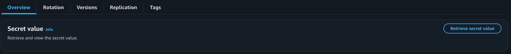
You should now see the secret value displayed
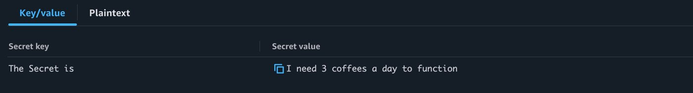
Select close to close the secret value display
Access your secret over aws CLI
- Turns out, the console is not the only way to access a secret
- Open AWS cloudshell - click on the cloudshell icon in the AWS management console's top navigation bar
- The cloudshell terminal should now be opened and ready (it can take up to 30 seconds)
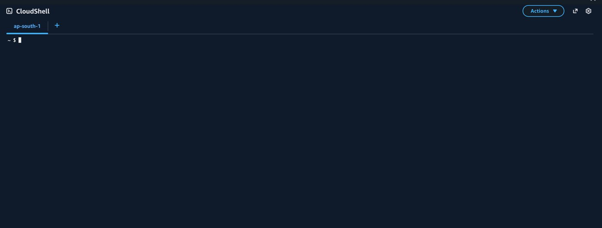
- In the cloudshell terminal, run the following command
- Make sure to replace
your-region-codeat the end of the command. Use the region code you see when you select your region dropdown
aws secretsmanager get-secret-value --secret-id "TopSecretInfo" --region ap-south-1The command should run successfully and give you the secret's value in JSON format
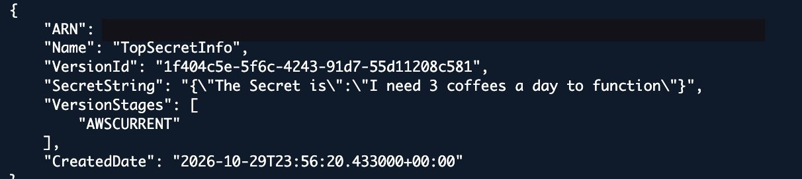
Analyse your cloudtrail events
- Head to the
CloudTrailconsole again - You should now be on the CloudTrail dashboard
- In the left navigation pane, select Event history
- Welcome to the event history page
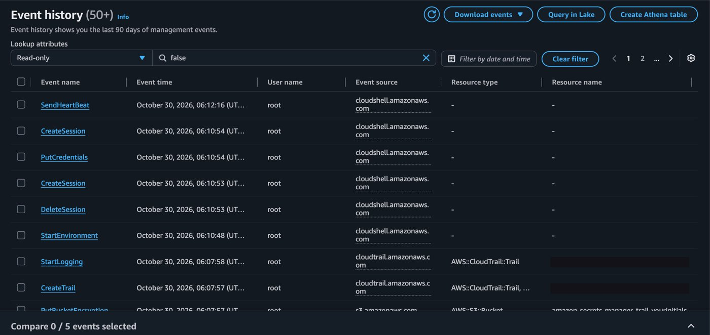
Under lookup attributes, select the dropdown and choose event source
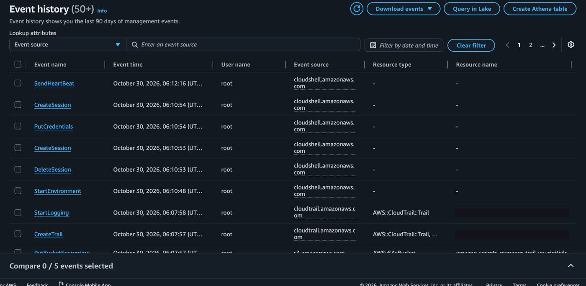
In the search bar next to event source, enter secretsmanager.amazonaws.com
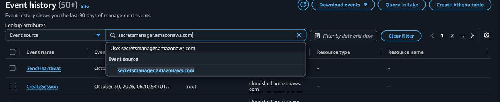
- You should now see events related to
secretsmanager.amazonaws.com - Scroll through the event list - check for an event called
GetSecretValue, This events means your secret's value was retrieved or used
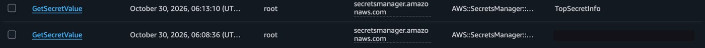
CloudTrail records an event when someone accesses your secret
Step 4: Track Secrets Access Using CloudWatch Metrics
We'll start by sending all of cloudtrail's logs to cloudwatch. Once it's in cloudwatch, we can set up helpful tools like cloudwatch metrics and alarms that can trigger notifications based on events
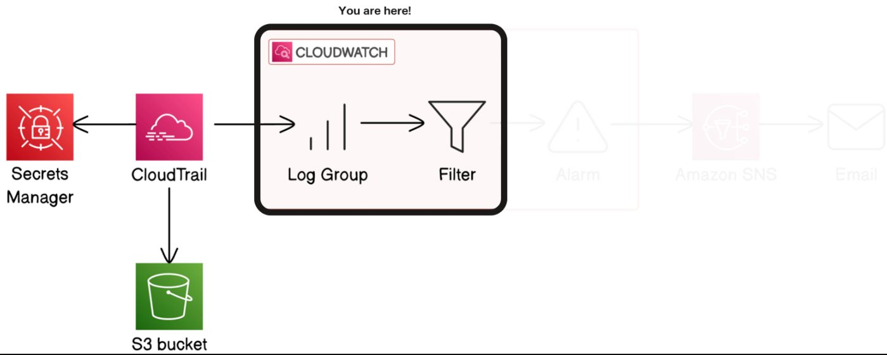
Analyse your cloudwatch logs
- Still in your
cloudtrailconsole, select Trails in the left navigation pane - Select your trail
secrets-manager-trail - You should now be seeing the details of your trail
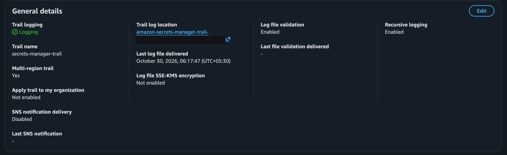
- Scroll down to the cloudwatch logs section
- Select Edit
- Check the enabled checkbox for cloudwatch logs
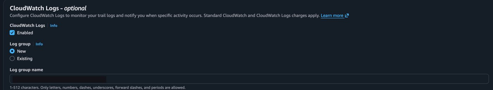
- Select New log group
- Under log group name, enter
amazon-secretsmanager-loggroup
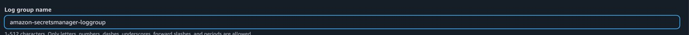
- Under IAM role, select New
- Under Role name, enter
CloudTrailRoleForCloudWatchLogs_secrets-manager-trail
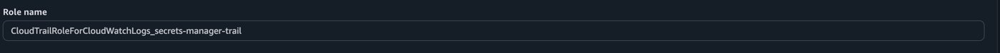
Select save changes to save the new cloudwatch logs setup
Verify your cloudwatch logs
- Head to the
cloudwatchconsole, let's verify that cloudtrail is really passing the logs to a new log group - In the left navigation pane, expand logs and select log groups
- Welcome to the log groups page
- In the log groups page, search for and select
amazon-secretsmanager-loggroup
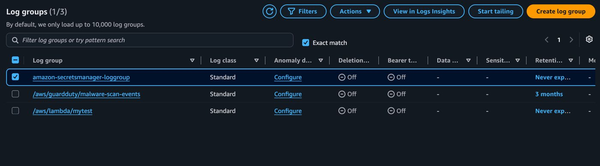
- You might see multiple log streams. Pick any one of them. If you only see one, that's fine too
- You should now see heaps of logs inside the stream. If you don't see rows and rows of logs straight away, you might need to wait a few minutes and refresh your page first
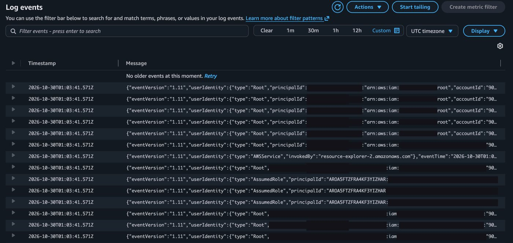
Create Metric Filter
- Head back to your log group
- At the top of your log group, select Actions and then Create metric filter from the dropdown menu
Welcome to the Define patterns page, This is where we tell cloudwatch about the kind of actions we're looking for
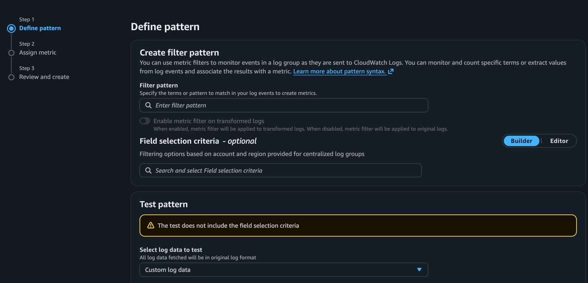
In the filter pattern field, enter GetSecretValue
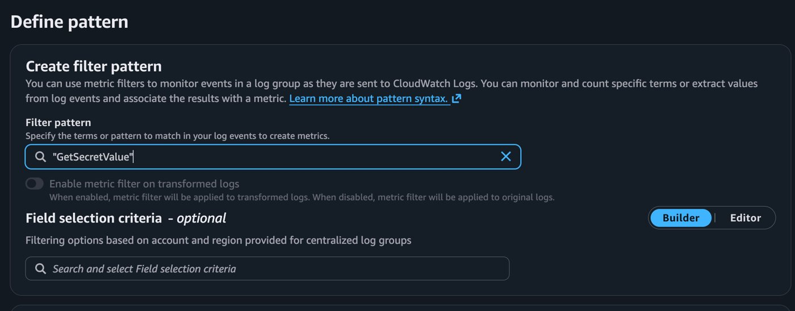
- We'll get to know the test pattern section in Step 6 for now, let's focus on creating the metric filter
- Select next
- For the filter name, let's use
GetSecretsValue - Under metric details, name the metric namespace:
SecurityMetrics
- Metric name: Enter
Secret is accessed - Metric value: Enter
1 - Default value: Enter
0 - Select Next - let's review our work
Welcome to the Review and create page for the metric filter
- Filter pattern:
GetSecretValue - Filter name:
GetSecretValue - Metric name:
Secret is accessed - Metric namespace:
SecurityMetrics - Applied on transformed logs: -
- Metric value:
1 - Default value:
0 - Unit: -
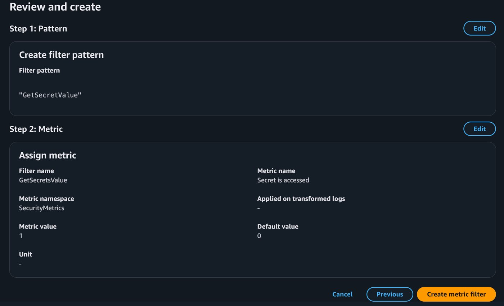
- Select Create metric filter to finalize and create your metric filter
- You should see a green banner at the top confirming metric filter creation
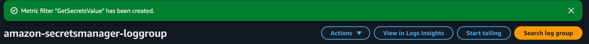
Step 5: Create CloudWatch Alarm and SNS Topic
A CloudWatch alarm that triggers when our SecretIsAccessed metric exceeds a threshold. We'll also set up an SNS topic to receive email notifications when the alarm is triggered.
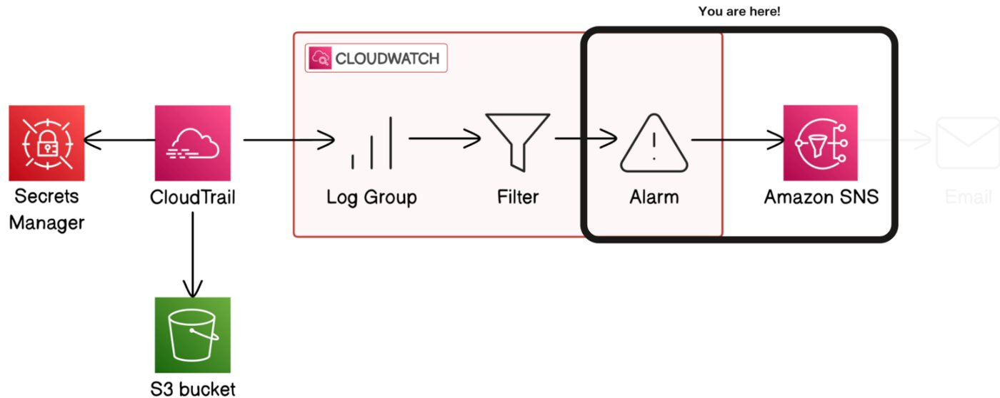
Create cloudwatch alarm
- Still in your cloudwatch alarm's page, select the metric filters tab
- Scroll down and check the box next to the
GetSecretValuemetric filter
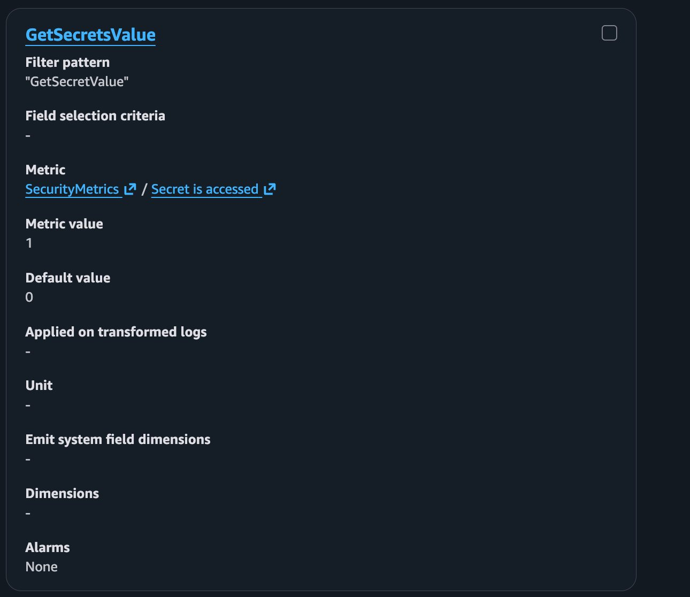
- Select create alarm
- Now, welcome to the cloudwatch alarm setup!
Under Metric, let's use the following values
- Namespace:
SecurityMetrics - Metric name:
Secret is accessed - Statistic: Average
- Period: 5 minutes
- Under conditions, set threshold type to static
- Set whenever SecretIsAccessed is… to Greater/Equal
Set than… to 1
- Select Next
- We're now on the configure actions page, This is how we tell cloudwatch what to do when we want to be alerted
- Under notification, keep the default setting In alarm
- Under the heading Select a notification to the following SNS topic, select create new topic
- Under Topic name, enter
SecurityAlarms
Under Email endpoints, enter your email address that you can access. In the next step, you'll check this inbox for emails (when the alarm goes off)
- Select create topic
- The SNS topic should now be created
- Select Next
- Under alarm name, enter
Secret is accessed - Under alarm description, enter a description like
This alarm goes off whenever asecret in Secrets Manager is accessed.
Select next to review and create the alarm
Let's review your alarm set up
- Namespace:
SecurityMetrics - Metric name:
Secret is accessed - Statistic:
Average - Period:
5 minutes
- Threshold type: Static
- Whenever Secret is accessed is: Greater/Equal (>=)
- Threshold value:
1 - Notification: When In alarm, send a notification to
SecurityAlarms
- Name:
Secret is accessed - Description: This alarm goes off whenever a secret in Secrets Manager is accessed.
- Select Create alarm
- You should see a green banner at the top confirming that your alarm was created
- There's also blue banner below it, telling us that a subscription is pending confirmation
Confirm SNS subscription
- Check your created alarm's row too - there's a Warning sign under the Actions heading.
- Select the warning sign.
- Check your email inbox for an email from AWS notifications with the subject
AWS notification - Subscription ConfirmationThis email is to confirm your subscription to the SNS topic you created
- Select confirm subscription
- You should now see a subscription confirmed page in your browser
Step 6: Test Email Notification
Let's test if our email notification system works as expected. We'll trigger the alarm by accessing the secret again and check if we receive an email notification.
Trigger Alarm
Head back to the Secrets Manager console. Let's try to trigger our own alarm by retrieving the secret value again
Head to your TopSecretInfo secret again
- Select Retrieve secret value
- Secret Exposed again
Troubleshoot your notification setup
There are a few places in our monitoring system where things could be breaking
- CloudTrail: Didn't record the
GetSecretValueevent. - CloudTrail: Isn't sending logs to CloudWatch.
- CloudWatch Metric Filter: Isn't filtering logs correctly.
- CloudWatch Alarm: Isn't triggering an action.
- SNS: Isn't delivering emails to you.
CloudTrail
Do we think CloudTrail actually recorded the event? What if CloudTrail missed it, and didn't know you've retrieved your secret's value?
- Head to the
CloudTrailconsole again - You should now be on the cloudtrail dashboard
- In the navigation pane, select event history
- Under Lookup attributes, select the dropdown and choose Event source
- In the search bar next to Event source, enter
secretsmanager.amazonaws.com - You should see at least one
GetSecretValueevent at the top of the list, which matches the time you viewed your secret. There should be more than one row, since it's now your second time retrieving a secret
Log Delivery
Could it be that CloudTrail isn't sending Logs to CloudWatch?
- Stay in the
CloudTrailconsole - Select Trails in the left navigation pane
- Click on your
secrets-manager-trail - Check the Last log file delivered timestamp - it should be recent if logs are being delivered properly!
- Scroll down to the CloudWatch Logs section
- Make sure it shows the correct log group name i.e.
amazon-secretsmanager-loggroup - That should mean CloudTrail is sending logs over to CloudWatch
Metric Filter
What if something went wrong with the CloudWatch metric filter? Maybe the filter is rejecting the events we're actually trying to capture
- Head to the
CloudWatchconsole - In the left navigation pane, select Log groups
- Find and click on your
amazon-secretsmanager-loggroup - Select the Metric filters tab
- Check the checkbox for your filter
GetSecretsValueand select Edit - Let's put your filter to the test! Here's a bunch of test log events. Enter them in the Log event messages panel
- Select Test Pattern
- If you scroll further down the results, you'll notice that they record an event called
GetSecretValue
This tells us the metric filter does correctly filter for events where your secret is accessed
Alarm Configuration
Maybe your CloudWatch alarm isn't getting triggered properly?
Let's see if the alarm can be triggered at all
Trigger the alarm manually
- Open AWS Cloudshell
- First, let's learn about how to write a CLI command for manually triggering our alarm
aws cloudwatch set-alarm-state help- Gotcha! Let's manually set the alarm to ALARM state
- First, run
qin the CloudWatch terminal to quit 'reading' mode - Next, let's trigger our alarm manually
aws cloudwatch set-alarm-state \
--alarm-name "Secret is accessed" \
--state-value ALARM \
--state-reason "Manually triggered for testing"Check your email inbox. There should be a notification email that your alarm is in alarm, and Manually triggered for testing as the reason
Adjust your alarm settings
Let's check a few critical settings
- Head back to the
CloudWatchconsole - Select All alarms from the left hand navigation panel
- Check the checkbox for your alarm
- Select the Actions dropdown, and select Edit
- On the alarm details page, look at the Statistic field
- Aha - maybe the statistic should be set to Sum, not Average or any other statistic!
- This is crucial because:
- Sum adds up all occurrences of secret access in the period (what we want)
- Average would calculate an average rate (i.e. the average number of times our secret was accessed per second over the 5 minute period), which might never cross our threshold
- Change the Statistic dropdown from Average to Sum
- You can also update the Period from 5 minutes to 1 minute, so we can trigger the alarm even faster when we see the Secret's value
- Check that the Threshold type is set to Static
- Confirm that the condition is Greater/Equal than 1
- Select Skip to Preview and create
- In the review page, make sure Statistic is now Sum
- Select Update alarm at the bottom of the page
SNS Subscription
- Since we've confirmed our email's subscription to SNS, surely that means you should be receiving emails?
- Let's confirm this by going directly to SNS
- Head to the
SNSconsole - In the left hand navigation panel, select Topics
- Select your topic i.e.
SecurityAlarms - Select Publish message. Let's try to manually send a message to all the emails subscribed to this topic
- Add a message Subject like
Testing - In the message body, enter a quick message like
Wassup - That's it! Select Publish message
- You should see a confirmation message at the top of the page
- Let's dash back to your inbox - it's the moment of truth! Can SNS send emails to you?
- Message received
This means SNS is actually set up properly